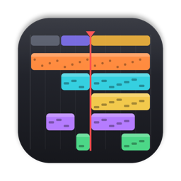
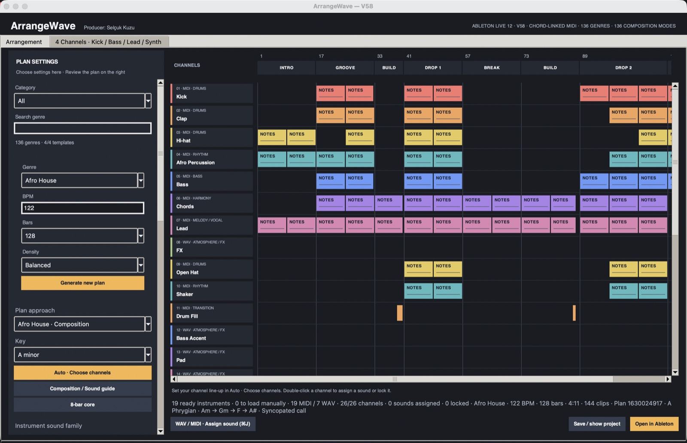
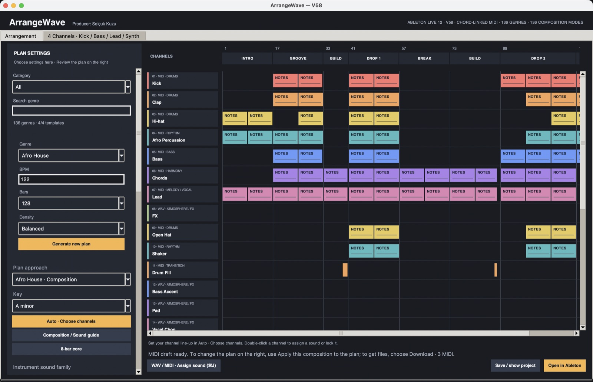
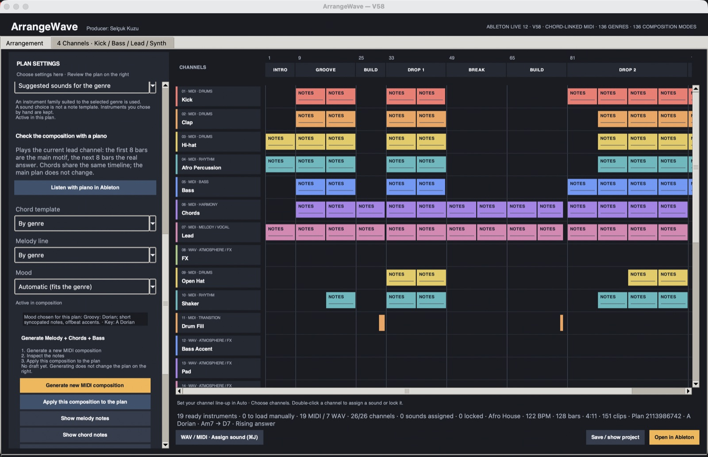
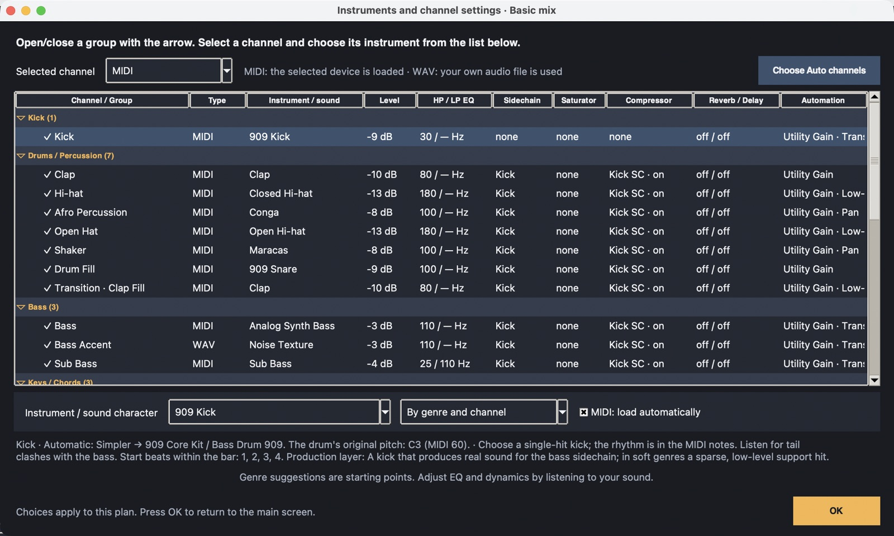

ArrangeWaveArrangeWave turns a genre idea into a full Ableton Live 12 arrangement: intro, builds, drops, break and outro, with melody, chords, bass and sub written from one shared harmony. Free, offline, no account. ArrangeWave bir tür fikrini eksiksiz bir Ableton Live 12 aranjmanına çevirir: intro, build, drop, break ve outro; melodi, akor, bas ve sub tek bir ortak armoniden yazılır. Ücretsiz, çevrimdışı, hesap gerekmez.

Download V58ArrangeWave runs on a Mac or Windows computer. Open this page there: kuzutu.github.io/arrangewaveArrangeWave Mac ya da Windows bilgisayarda çalışır. Bu sayfayı bilgisayarında aç: kuzutu.github.io/arrangewave
From an empty project to a finished song structure, in one click.Boş bir projeden bitmiş bir şarkı yapısına, tek tıkla.
Pick a genre, BPM and length. Every section is laid out with its own energy: tension builds, the drop releases it.Tür, BPM ve uzunluğu seç. Her bölüm kendi enerjisiyle dizilir: gerilim yükselir, drop onu çözer.
Melody, chords, bass and sub follow the same chords, so nothing clashes.Melodi, akor, bas ve sub aynı akorları izler; hiçbiri çatışmaz.
Groovy, dark, hopeful, bittersweet and more. Each sets the scale, chords and melody character.Groovy, karanlık, umutlu, buruk ve fazlası. Her biri gamı, akorları ve melodi karakterini belirler.
Drums, percussion and bass lines with the pulse of each genre.Davul, perküsyon ve bas çizgileri her türün kendi nabzıyla.
Instruments loaded, sidechain routed, automation drawn. Open the project and press play.Enstrümanlar yüklü, sidechain bağlı, otomasyon çizili. Projeyi aç ve çal.
Pick your own VST3 / AU instruments for kick, bass, lead and synth.Kick, bas, lead ve synth için kendi VST3 / AU enstrümanlarını seç.
Every plan is new. Every note is generated.Her plan yeni. Her nota üretilir.



Version 58. Pick the file for your computer. Requires Ableton Live 12 to play the projects.Sürüm 58. Bilgisayarına uygun dosyayı seç. Projeleri çalmak için Ableton Live 12 gerekir.
ArrangeWave is free and isn't notarized by Apple. The first time you open it, macOS says "ArrangeWave" Not Opened. This is how you open it:ArrangeWave ücretsizdir ve Apple'ın noter onayından geçmemiştir. İlk açılışta macOS "ArrangeWave" Açılmadı der. Şöyle açılır:
You only do this once. Windows may show "Windows protected your PC": click More info > Run anyway.Bunu yalnızca bir kez yaparsınız. Windows "Windows bilgisayarınızı korudu" derse Ek bilgi > Yine de çalıştır'a basın.
Run this in Terminal:Terminal'de şunu çalıştırın:
xattr -dr com.apple.quarantine /Applications/ArrangeWave.app
Ableton Live 12. Built-in instruments come from your Core Library; Operator, Analog, Wavetable and similar devices need the matching Live edition.Ableton Live 12. Yerleşik enstrümanlar Core Library'den alınır; Operator, Analog, Wavetable gibi cihazlar ilgili Live sürümünü gerektirir.
ArrangeWave works offline. No account, no API key, your projects stay on your computer.ArrangeWave çevrimdışı çalışır. Hesap ya da API anahtarı yok; projelerin bilgisayarında kalır.
8c56a8ca865a19572f11159cc0fb51607fbbae6c830085a5fae5fd87ee0a6344 ArrangeWave_V58_macOS.dmg 6f6c291700fe1b3a15810ebc6206d198c1eecdd2652d85f296176e9e37a065f2 ArrangeWave_V58_Windows_x64_Setup.exe